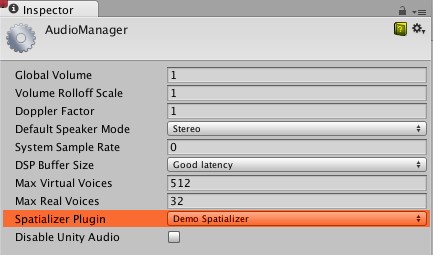

Audio Spatializer SDK
Overview
The audio spatializer SDK is an extension of the native audio plugin SDK that allows changing the way audio is transmitted from an audio source into the surrounding space. The built-in panning of audio sources may be regarded as a simple form of spatialization in that it takes the source and regulates the gains of the left and right ear contributions based on the distance and angle between the AudioListener and the AudioSource. This provides simple directional cues for the player on the horizontal plane.
Background
With the advent of virtual and augmented reality systems the spatialization method more and more becomes a key component of the player's immersion. Our ears and brains are highly aware of microscopic delays between the sound received from a source at the left and right ears respectively. Furthermore we are capable of unconsciously interpreting a change in the balance of high frequencies to tell if an object is in front of, behind or even above or below us. We may also be able to tell if an object is partially occluded based on the difference in the sound at each ear or infer something about the shape of the room that we are in based on the reflections of the sound. In other words: Sound is extremely important in our daily navigation, we just maybe don’t notice it that much!
Sound occlusion is a very hard problem to solve in terms of computation power. Whereas in global illumination you may consider the movement of light as effectively instantaneous, sound is moving very slowly. Therefore calculating the way sound actually moves around (as waves) in a room is not feasible computationally. For the same reason there are many approaches towards spatialisation tackling different problems to various extents.
Some solutions are only solving the HRTF problem. HRTF stands for Head-Related Transfer Function, and a rough analogy to this from the graphics world would be spherical harmonics: i.e. a directionally influenced filtering of the sound that we apply on both ears which contains the micro-delay between the ears as well as the directional filtering that ear-flaps, the head itself and the shoulders contribute to. Adding HRTF filtering already immensely improves the sensation of direction over a conventional panning solution (a typical and famous example of this is the binaural recording of the virtual barber shop). Direct HRTF is somewhat limited though as it only is concerned with the direct path of audio and not how it is transmitted in space.
Occlusion is the next step up from this in that it can indirectly reflect the sound off walls. To take a rough equivalent from the graphics world again, this could be compared to specular reflection in the sense that both source and listener locations determine the outcome, and of course each reflected directional wave of sound hits each ear with a different HRTF and has a different delay based on the length of the path that the wave has travelled.
Finally there is room reflections which in many ways corresponds to the diffuse part of a global illumination solution in that sound gets emitted into the room and is reflected on multiple walls before hitting the ears as a field of overlapping waves, each with a different direction and accumulated delay relative to the audio source.
SDK and Example Implementation
With so many hard problems to solve there exist a variety of different audio spatialization solutions. We found that the best way to support these in Unity was to create an open interface, the Audio Spatializer SDK, which is an extension on top of the Native Audio Plugin SDK that allows replacing the standard panner in Unity by a more advanced one and gives access to important meta-data about the source and listener needed for the computation.
An example implementation of a spatializer is provided here. It is intentionally simple in that it only supports direct HRTF and needs to be optimized for production use. Accompanying the plugin is a simple reverb, just to show how audio data can be routed from the spatializer plugin to the reverb plugin. The HRTF filtering is based on the KEMAR data set, which is a set of per-ear impulse response recordings performed on a dummy head by Bill Gardner at MIT Media Lab. These impulse responses are convolved with the input signal using fast convolution via the Fast Fourier Transform. The positional meta-data is only used for picking the right impulse response sets, as the data set consists of circularly arranged impulse responses for elevation angles ranging from -40 below to 90 degrees above the head.
Initialization
The main difference between a spatialization effect and mixer effects in Unity is that the spatializer is placed right after the audio source decoder that produces a stream of audio data so that each source has its own effect instance processing only the audio produced by the source. This is different from audio mixer plugins that process a mixture of audio from various audio sources connected to a mixer group. To enable the plugin to operate like this it is necessary to set a flag in the description bit-field of the effect:
definition.flags |= UnityAudioEffectDefinitionFlags_IsSpatializer;
Setting this flag upon initialization notifies Unity during the plugin scanning phase that this is a spatializer and so, when an instance of this plugin is created, will allocate the UnityAudioSpatializerData structure for the spatializerdata member of the UnityAudioEffectState structure.
Before being able to use the spatializer in the project, it needs to be selected in the Audio Project settings:

On the AudioSource, the checkbox Spatialize enables the spatializer to be used. This may also be controlled from script via the AudioSource.spatialize property. In a game with a lot of sounds it may make sense to only enable the spatializer on the nearby sounds and use traditional panning on the distant ones.

Spatializer effect meta-data
Unlike other effects that are run in the mixer on a mixture of sounds, spatializers are applied directly after the AudioSource has decoded audio data. Therefore each instance of the spatializer effect has an own instance of UnityAudioSpatializerData associated with mainly data about the AudioSource.
struct UnityAudioSpatializerData
{
float listenermatrix[16]; // Matrix that transforms sourcepos into the local space of the listener
float sourcematrix[16]; // Transform matrix of audio source
float spatialblend; // Distance-controlled spatial blend
float reverbzonemix; // Reverb zone mix level parameter (and curve) on audio source
float spread; // Spread parameter of the audio source (0..360 degrees)
float stereopan; // Stereo panning parameter of the audio source (-1: fully left, 1: fully right)
// The spatializer plugin may override the distance attenuation in order to
// influence the voice prioritization (leave this callback as NULL to use the
// built-in audio source attenuation curve)
UnityAudioEffect_DistanceAttenuationCallback distanceattenuationcallback;
};
The structure contains the full 4x4 transform matrices for the listener and source. The listener matrix has already been inverted so that the two matrices can be easily multiplied to get a relative direction-vector. The listener matrix is always orthonormal, so the inverse is cheap to calculate. Furthermore the structure contains fields corresponding to the properties of the audio source: Spatial Blend, Reverb Zone Mix, Spread and Stereo Pan. It is the responsibility of the spatializer to implement these correctly, as when it’s active, Unity’s audio system will only provide the raw source sound as a stereo signal (even when the source is mono or multi-channel in which case up- or down-mixing is used).
Matrix conventions
The sourcematrix field contains a plain copy of the transformation matrix associated with the AudioSource . For a plain AudioSource on a game object that is not rotated that will just be a translation matrix where the position is encoded in elements 12, 13 and 14. The listenermatrix field contains the inverse of the transform matrix associated with the AudioListener. This makes it very convenient to determine the direction vector from the listener to the source like this:
float dir_x = L[0] * S[12] + L[4] * S[13] + L[ 8] * S[14] + L[12];
float dir_y = L[1] * S[12] + L[5] * S[13] + L[ 9] * S[14] + L[13];
float dir_z = L[2] * S[12] + L[6] * S[13] + L[10] * S[14] + L[14];
where L is listenermatrix and S is sourcematrix. If you have a listenermatrix that is not rotated and has uniform scaling of 1 (camera matrices should never be scaled), notice that the position in (L[12], L[13], L[14]) is actually the negative value of what you see in Unity’s inspector. This is because listenermatrix is the inverse of the camera’s transformation matrix. If the camera had also been rotated we would not be able to read the positions directly from the matrix simply by negating, but would have to undo the effect of the rotation first. Luckily it is easy to invert such Transformation-Rotation-Scaling matrices as described here, so what we need to do is transpose the top-left 3x3 rotation matrix of L and calculate the positions like this:
float listenerpos_x = -(L[0] * L[12] + L[ 1] * L[13] + L[ 2] * L[14]);
float listenerpos_y = -(L[4] * L[12] + L[ 5] * L[13] + L[ 6] * L[14]);
float listenerpos_z = -(L[8] * L[12] + L[ 9] * L[13] + L[10] * L[14]);
Attenuation curves and audibility
The only thing that is still handled by the Unity audio system is the distance attenuation, which is applied to the sound before it enters the spatialization stage, and this is necessary so that the audio system knows the approximate audibility of the source, which can be used for dynamic virtualization of sounds based on importance in order to match the user-defined Max Real Voices limit. Since this is a chicken-and-egg problem this information is not retrieved from actual signal level measurements but corresponds to the combination of the values that we read from the distance-controlled attenuation curve, the Volume property and attenuations applied by the mixer. It is however possible to override the attenuation-curve by your own or use the value calculated by the AudioSource’s curve as a base for modification. To do this there is a callback in the UnityAudioSpatializerData structure that may be implemented:
typedef UNITY_AUDIODSP_RESULT (UNITY_AUDIODSP_CALLBACK* UnityAudioEffect_DistanceAttenuationCallback)(
UnityAudioEffectState* state,
float distanceIn,
float attenuationIn,
float* attenuationOut);
A simple custom logarithmic curve may just be implemented like this:
UNITY_AUDIODSP_RESULT UNITY_AUDIODSP_CALLBACK SimpleLogAttenuation(
UnityAudioEffectState* state,
float distanceIn,
float attenuationIn,
float* attenuationOut)
{
const float rollOffScale = 1.0f; // Similar to the one in the Audio Project Settings
*attenuationOut = 1.0f / max(1.0f, rollOffScale * distanceIn);
return UNITY_AUDIODSP_OK;
}
Script API
Complementing the native side there are also two new methods on the AudioSource that allow setting and getting parameters from the spatializer effect. These are named SetSpatializerFloat/GetSpatializerFloat and work similarly to the SetFloatParameter/GetFloatParameter used in the generic native audio plugin interface. The main difference is that SetSpatializerFloat/GetSpatializerFloat take and index to the parameter to be set/read whereas SetSpatializerFloat/GetSpatializerFloat refer to the parameters by name.
Additionally the boolean property AudioSource.spatializer is linked to the checkbox in the AudioSource inspector and controls the instantiation and deallocation of the spatializer effect based on the selection in the Audio Project Settings. If instantiation of your spatializer effect is a very costly thing (in terms of memory allocations, precalculations etc) you may consider keeping the Unity plugin interface bindings very light-weight and dynamically allocate your effects from a pool so that the activation/deactivation does not lead to frame drops.
Known limitations of the example plugin
Due to the fast convolution algorithm used, moving fast causes some zipper artefacts which can be removed though the use of overlap-save convolution or cross-fading buffers. Also the code does not support tilting the head to the side, this should be easy to fix though. The KEMAR data set is the only data set used in this demo. IRCAM has a few data sets available that were obtained from human subjects.